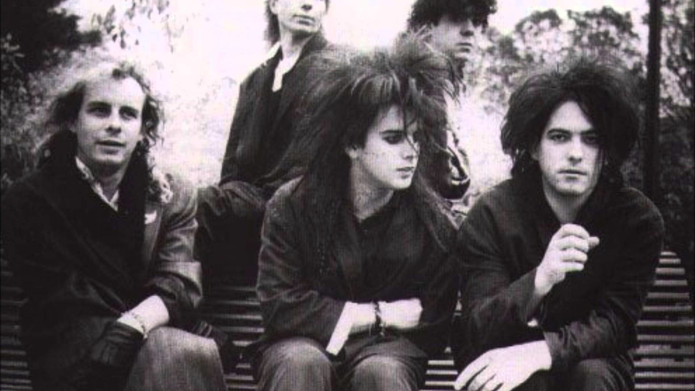

The Cure
The Cure es una banda de rock inglesa. Fue formada en Crawley, West Sussex, Inglaterra en 1978. Durante su larga trayectoria ha tenido numerosos cambios en la formación de la banda, el guitarrista, vocalista principal y compositor Robert Smith se ha mantenido como el único miembro constante.
Han ganado reconocimientos por sus trabajos discográficos, entre otros: "Three Imaginary Boys", "Seventeen Seconds", "Pornography", "Disintegration" y "Wish".
Durante sus años de formación, The Cure ha logrado vender más de treinta millones de discos. Tres años más tarde, en enero de 1976, Marc Ceccagno formaba una nueva banda, llamada Malice, junto a Robert Smith (ya a la guitarra) y Michael Dempsey (cambiando al bajo) y otros dos estudiantes del St. Wilfrid’s Catholic Comprehensive School. Ceccagno dejó pronto el grupo, para formar una banda de fusión Jazz-Rock llamada Amulet. Los miembros restantes de Malice Smith y Dempsey cambiaron su nombre por Easy Cure en enero de 1977.
En ese tiempo la influencia del omnipresente punk rock se comenzaba a hacer patente en el estilo musical del grupo. La entrada de Lol Tolhurst como baterista, además del fichaje de Porl Thompson a la guitarra solista terminaron la alineación Easy Cure. La banda probó durante estos meses a distintos vocalistas sin tener mucho éxito, hasta que Smith asumió finalmente el papel de vocalista y de líder del grupo en septiembre de 1977.
Ese mismo 1977, Easy Cure ganaba una competición de talentos con el sello alemán Hansa Records, recibiendo como premio un contrato de grabación. El resultado de esta colaboración fueron algunas canciones de Easy Cure que nunca han sido editadas. En marzo de 1978, tras desencuentros con el sello acerca de la dirección que el grupo debía tomar, Easy Cure decidía romper su contrato con Hansa. Según Smith, el sello quería convertirlos en una banda para adolescentes, realizando versiones de otros grupos, lo que iba en contra del espíritu de la banda.
Posteriormente, Thompson dejaba la banda. El trío restante, Smith, Tolhurst y Dempsey, fue rebautizado por Smith en ese momento, para asumir ya su nombre definitivo, The Cure.
 Escuchar en Spotify
Escuchar en Spotify
 Escuchar en YouTube
Escuchar en YouTube